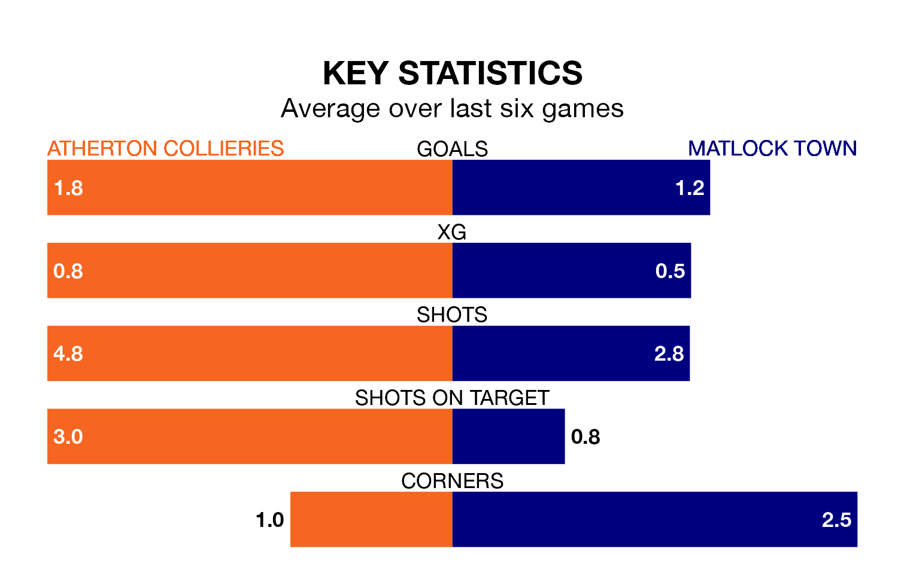

Atherton Collieries host Matlock Town on Saturday in Northern Premier League.
In their last league match, on Monday, Atherton Collieries lost to Lancaster City 3-2 away.
Matlock also lost, 3-1 at home against Stafford Rangers on December 30.
Atherton Collieries are bottom of the table after 24 games, of which they have won four and drawn three, earning 15 points.
Matlock are 11 places ahead of the hosts in 11th, with 10 wins and four draws putting them on 34 points.
With 27 goals in 24 games so far this season, Atherton Collieries are scoring at below the league average rate with 1.1 goals per game. And they are conceding more than average, letting in 61 goals at a rate of 2.5 per game.
Town, meanwhile, are above average scorers, with 1.9 goals per game, compared to a league average of 1.7. They have also conceded 1.9 goals per game.
Atherton Collieries are in mixed form in Northern Premier League, with two wins and a draw from their last six games.
And also with two wins and a draw over that period, the away team's form is identical – they have both taken seven points from 18.
Over the last two years, Atherton Collieries and Matlock have played each other on four occasions. Atherton Collieries won one of them and Matlock the other.
On average, Atherton Collieries scored 0.2 goals and Matlock 1.2 in those matches.
Their last meeting was on August 22, when Matlock won 3-0 at home.
Updated: 10:36, 03/01/24